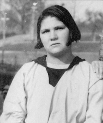

Sterilization is “a process or act that renders an individual incapable of sexual reproduction”. Forced sterilization occurs “when a person is sterilized after refusing the procedure, without their knowledge , or is not given an opportunity to provide informed consent” . In U.S. law of 1900–1940, there was no explicit statute labeled “forced sterilization”; instead, states passed compulsory sterilization laws under eugenic rationales. These laws authorized or required sterilization of certain institutionalized persons deemed “hereditary” problems, often with minimal procedural safeguards. For instance, Virginia’s 1924 law authorized vasectomy for men and salpingectomy (removal of Fallopian tubes) for women “without serious pain or substantial danger to life”, theoretically to protect society and reduce hereditary illness. The law provided a petition-and-hearing process (notice to patient/guardian and right of appeal), but in practice these processes rarely prevented a doctor or superintendent’s order. it is a human rights violation and can constitute an act of genocide, gender-based violence, discrimination and torture.
The individuals that were often a target to this act
Institutionalized persons: victims were inmates of asylums, mental hospitals, prisons or homes for the “feebleminded’’
Criminals: the sterilization of those criminals was more likely to be an extra-legal punishments (castration for sex crimes) occurred sporadically.
People based on their race, gender and class. Mostly native and african americans and immigrants
The most known sterilizations types back in the early 20th century
Tubal ligation:
Physicians performed abdominal (or occasionally vaginal) surgery to sever or remove the Fallopian tubes. A typical technique was the Pomeroy ligation that was developed 1918 where a loop of tube is tied and cut. Instruments included scalpels, clamps (e.g. Spencer Wells, Babcock), scissors, and thread (silk or later catgut). General anesthesia (ether or chloroform) became standard after 1900; before 1920 this was performed by an anesthetist with ether-chloroform, later nitrous oxide or spinal block were occasionally used.Antisepsis practice was evolving: by the 1910s surgeons used carbolic or iodine scrubs and sterilized instruments (autoclaves became common), reducing sepsis from earlier decades. A typical setup was an operating room in a hospital or asylum, with assistant nurses and an ether mask. Outcome:permanent infertility. (In Buck v. Bell, Virginia law explicitly contemplated salpingectomy for women without major risk ).
Vasectomy:
is an elective surgical procedure that results in male sterilization, often as a means of permanent contraception. During the procedure, a small scrotal incision was made to expose each vas deferens. The surgeon cut out a short segment, ligated the ends, and returned the vas to the wound. Instruments were a small scalpel, haemostatic forceps, and silk sutures. Local anesthesia (cocaine or novocaine injections) was often used for comfort after WWI, though early cases might use ether sedation.Antiseptic prep (iodine) was applied to the scrotum. Vasectomy was considered minor surgery with quick recovery; it was explicitly named as the male counterpart in many eugenics laws . As with tubal work, the result was a permanent inability to father children.
These surgeries took place in hospitals or state institutions.
is an elective surgical procedure that results in male sterilization, often as a means of permanent contraception. During the procedure, a small scrotal incision was made to expose each vas deferens. The surgeon cut out a short segment, ligated the ends, and returned the vas to the wound. Instruments were a small scalpel, haemostatic forceps, and silk sutures. Local anesthesia (cocaine or novocaine injections) was often used for comfort after WWI, though early cases might use ether sedation.Antiseptic prep (iodine) was applied to the scrotum. Vasectomy was considered minor surgery with quick recovery; it was explicitly named as the male counterpart in many eugenics laws . As with tubal work, the result was a permanent inability to father children.
Buck v. Bell
Back in 1924 the sterilization law was passed in Virginia State . and in 1927 there was a decision by the United States Supreme Court that upheld this law allowing the forced sterilization of Carrie Elizabeth buck and subsequently affected many other people especially those labeled with intellectual disabilities (who were considered “unfit” to reproduce.) , Virginia’s Act recited that the “health of patients and welfare of society may be promoted by sterilization of mental defectives,” and authorized sterilization of inmates with “hereditary forms of insanity, idiocy, imbecility or epilepsy” . The main constitutional provisions were the Fourteenth Amendment’s Due Process and Equal Protection Clauses. Holmes noted analogies to earlier public-health cases: Jacobson v. Massachusetts (1905) had upheld compulsory vaccination, and compulsory military service had survived confrontation with personal liberty.
The case involved Carrie Buck, a young woman who was ordered to be sterilized. The Court, led by Justice Oliver Wendell Holmes Jr , ruled that this practice was justified as an constitutional act. Holmes justified it with the infamous line: “Three generations of imbeciles are enough.”!
Why does buck v bell case matters ?
It matters because It legalized the eugenics movement in the United States. The Buck v. Bell decision came at the high point of this movement. At Buck’s argument in 1927, eight other states had sterilization laws (and seven more plus Puerto Rico passed laws soon after) . 20th-century eugenics also influenced Nazi policy in Germany. Indeed, Buck v. Bell was cited by Nazi officials as justification: at the Nuremberg Trials the U.S. prosecution highlighted Nazi sterilizations, and Nazi defendants invoked Buck in their own defense . The U.S. maps below illustrate how sterilization laws spread during this era, causing the forced sterilization of between sixty and 70 thousand individuals.
the decision has never been formally overturned, but it is widely condemned today as a major violation of human rights
Who is Carrie Buck?

Early Life
July 2nd, 1906, Carrie Elizabeth Buck was born in Charlottesville, Virginia to Emma Buck, a poor woman later institutionalized as “feeble-minded.” Unable to care for Carrie, Emma lost custody, and Carrie was placed with the Dobbs family who treated her as a servant. The Dobbs family did not allow Carrie to receive schooling, and this was later used against her in court as evidence of intellectual disability. Carrie was a normal, intelligent girl.
The Rape & Accusations of Mental Disability
In 1923, Carrie was raped by a nephew of the Dobbs family, Clarence Garland. In an attempt to conceal the crime and pregnancy, the Dobbs family had Carrie committed to the Virgina State Colony for Epileptics and Feeble-Minded where she gave birth to a daughter, Vivian.
The colony superintendent, and committed eugenicist, Dr. Albert Priddy selected Carrie as a test case to legalize forced sterilization under Virgina’s new Eugenical Sterilization Act of 1924. Dr. Priddy argued Carrie represented a hereditary line of feeble-mindedness: her mother, herself, and even baby Vivian were all given this label. But this diagnosis had no credible scientific label, in fact, the “feeble-minded” label was often put on those who were simply poor, uneducated, or socially inconvenient.
The Case of Buck v. Bell
Introduction and Historical Context:
The case of Buck v. Bell represents a critical moment in legal history where law, science, and social ideology dangerously intersected. It cannot be understood in isolation, but rather as part of a broader legislative and social effort driven by the ideology of eugenics, which was widely accepted in the United States during the early twentieth century.
Legal Foundation and Legislative Background:
The legal foundation of the case began with the enactment of Virginia’s Eugenical Sterilization Act in 1924. This law was not simply passed as a neutral public health measure; instead, it was carefully designed to withstand constitutional challenges. Lawmakers included procedural safeguards—such as hearings, notice requirements, and administrative approvals—not necessarily to protect individuals, but to create the appearance of due process. In reality, these procedures were often superficial and failed to provide genuine legal protection. The state deliberately sought to create a “test case” that would validate the law before higher courts, and Carrie Buck was selected for this purpose.
Trial Court Proceedings:
The case was first brought in a Virginia trial court against J. H. Bell, who represented the institution seeking to sterilize Carrie Buck. At this stage, the proceedings were deeply flawed. Carrie Buck was portrayed as “feeble-minded,” along with her mother and infant daughter, in an attempt to demonstrate a hereditary condition. However, subsequent historical research has shown that this characterization was largely inaccurate and exaggerated.
More troubling was the role of her legal representation. Her appointed lawyer, Irving Whitehead, failed to mount a meaningful defense. Rather than challenging the constitutionality of the law or the validity of the evidence, he effectively cooperated with the state, raising serious concerns about whether Carrie Buck received a fair trial at all. Some scholars even argue that the case functioned more as a coordinated legal strategy than a genuine adversarial proceeding.
Appeal Process:
After the trial court ruled in favor of the state, the case was appealed to the Supreme Court of Appeals of Virginia (the highest court in the state at the time), which upheld the law with minimal critical analysis. The case then progressed to the Supreme Court of the United States, where it was framed as a constitutional question involving the limits of state power and the protections guaranteed by the Fourteenth Amendment, particularly the Due Process Clause.
The Supreme Court’s decision, delivered in 1927, upheld the law in an 8–1 ruling. The majority opinion was written by Justice Oliver Wendell Holmes Jr., whose reasoning reflected the prevailing beliefs of the time rather than a principled commitment to individual rights. Holmes argued that the state had a legitimate interest in preventing those deemed “unfit” from reproducing, drawing a controversial analogy to compulsory vaccination, referencing earlier cases such as Jacobson v. Massachusetts.
Photograph of Supreme Court Justice Oliver Wendell Holmes.
His justification suggested that individual rights could be overridden in the interest of public welfare, a position that significantly expanded the scope of state authority over the human body. His infamous statement, “Three generations of imbeciles are enough,” revealed not only the harshness of the ruling but also the underlying bias that shaped the Court’s reasoning.
Judicial Reasoning and Significance of the Opinion:
What makes Holmes’s role particularly significant is not merely that he wrote the opinion, but that he gave constitutional legitimacy to a policy rooted in pseudoscience and discrimination. By framing sterilization as a reasonable exercise of state power, he effectively normalized a practice that violated fundamental principles of bodily autonomy and human dignity.
The absence of a written dissent by Pierce Butler further highlights how widely accepted these ideas were within the legal establishment at the time, despite their ethical implications.
Impact of the Decision:
The impact of the decision was immediate and far-reaching. By upholding the constitutionality of forced sterilization, the Court removed legal barriers for similar laws across the country. As a result, an estimated 60,000 to 70,000 individuals were sterilized in the United States over the following decades. Many of the victims were women, people with disabilities, and individuals from marginalized or economically disadvantaged backgrounds. The ruling also extended beyond American borders, influencing policies in other countries that adopted similar eugenic practices.
Critical Evaluation and Legal Consequences:
In retrospect, the case is widely regarded as a failure of the legal system. The procedural safeguards included in the law proved ineffective, the representation of the plaintiff was inadequate, and the Court’s reasoning relied on flawed scientific assumptions. The decision illustrates the danger of allowing law to be influenced by ideology rather than grounded in evidence and fundamental rights.
Although later developments in constitutional law—particularly in areas related to privacy and bodily integrity—have moved in a different direction, the fact that Buck v. Bell has never been formally overturned remains deeply controversial.
Conclusion
Ultimately, the case serves as a powerful warning. It shows that legality does not always equate to justice, and that courts can sometimes legitimize harmful practices when influenced by dominant social beliefs. For this reason, Buck v. Bell continues to be studied not only as a historical event, but as an enduring example of the need for critical scrutiny, ethical responsibility, and the protection of human rights within the legal system.
Public Opinion Buck v. Bell
Public Opinion at the Time
When the decision for Buck v. Bell was made in 1927, the practice and pseudoscience of Eugenics were heavily prominent and influenced public opinion. A majority of Americans, including legislators, scientists, and the courts, were in favor of policies like forced sterilization. This is because they believed sterilization served the public good, removing any unfavorable characteristics or “bad genes” from society. Especially when it comes to “feeble-mindedness” and institutionalization, many saw it as a degradation of humanity. Even more egregiously, those individuals were not even human, just animals that needed to be prevented from breeding and creating more of them. This mindset was common at the time, but it is drastically different from the sentiment held by the majority now.
Current Public Opinion
In the modern world, the decision in Buck v. Bell is a failure of the law and human rights. The Court aimed to protect the burden of the state instead of the humanity of individuals. As precedent has developed, so has the push for bodily autonomy, or the right to control what happens to one’s body. This would include protections against forced sterilization. Also, with the establishment of the Universal Declaration of Human Rights (UDHR), every individual has the right to life and to have a family. This means that the rights and protections from forced sterilization are a universal right that needs to be fulfilled in the United States and other countries.
How to Prevent This From Happening
The first and most important step in keeping decisions like Buck v. Bell from happening again is to overturn the decision. Buck v. Bell has never been overturned within the United States law, and it still stands as precedent.
This means that this is the decision that the Supreme Court and lower courts have to follow when making similar decisions. Once Buck v. Bell is overturned, then the public opinion against forced sterilization and the law will be aligned. The second step is to spread awareness and information about the pseudoscience of eugenics. This can encourage individuals to write to their legislators to enact legislation to prohibit the practice of eugenics and to protect vulnerable populations that have been historically affected more by forced sterilization.
Through increased awareness, historical acknowledgement of the past injustices regarding forced sterilization can be recognized, and serve as the foundation for future progress in resolving this issue. While it is important to create these changes within the United States for the specific case of Buck v. Bell, this issue needs to be promptly addressed and promoted in the international community to create global pressure to stop forced sterilization.